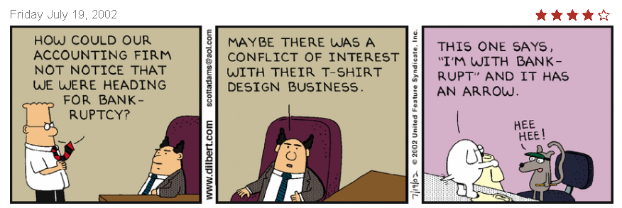
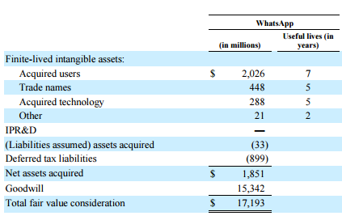
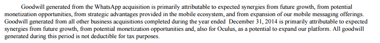

Source acknowledgements 1
Introduction
In this case, we will discuss the business, measurement and audit risks associated with auditing the intangibles that arise due to business combinations (including mergers and acquisitions). The intangibles that typically arise during an acquisition can be grouped broadly into finite-lived identifiable intangibles, and indefinitely lived intangibles, which include the unidentified intangible asset known as “goodwill.”
“How could our accounting firm not notice that we were heading for bankruptcy?”
“Maybe there was a conflict of interest with their t-shirt designing business” Dilbert & the boss, 19th July 2002.
This case covers four interrelated topics. First, from a financial statement analysis perspective: (i) the allocation of acquisition prices paid to intangible assets; and (ii) how market prices reflect intangible assets. From an audit perspective: (iii) understanding the link between market prices (relative to book values) and impairment risk; and (iv) the auditor’s use of specialists.
Background
Valuation theory
Ultimately, the value of any asset, tangible or intangible, is the present value of future cash-flows that asset can generate. In most cases, however, an asset will generate different future cash flows based on how it is used. Thinking that an assets value can change depending on its use gives rise to the term value-in-use. The value-in-use of an asset is generally considered as company-specific and will usually exceed the assets’ value-in-exchange, which is a market driven value that reflects what the company could exchange an asset for on the open market.
In general, assets are recorded on the balance sheet at a historical cost, which is a historical value-in-exchange for the individual asset. The objective of financial reporting is not to provide estimates of the value-in-use of assets, which depends on how the assets are being used and is often dependent on the use of an asset with other assets (seldom is an asset used on a standalone basis to generate cash-flows).
The distinction between value-in-use and value-in-exchange has been around for a while… Adam Smith is cited with stating that “The things which have greatest value-in-use have frequently little or no value-in-exchange; and, on the contrary, those which have the greatest value-in-exchange have frequently little or no value-in-use.”
Quote from: Adam Smith (1776), Wealth of Nations, Book I, Chapter IV.
Instead the objective of financial reporting, from the FASB’s Concepts Standard 8, is, “to provide financial information about the reporting entity that is useful to existing and potential investors, lenders, and other creditors in making decisions about providing resources to the entity.” And specifically, “information to help them assess the prospects for future net cash inflows to an entity.” Which isn’t to provide information on the value of the company, but instead the inputs, or, “information to help existing and potential investors, lenders, and other creditors to estimate the value of the reporting entity.” emphasis added.2

In general, economic theory typically assumes that managers make use of their resources at their highest-and-best-use. When this is the case, the highest-and-best-use of an asset means that the value-in-use will be higher than the value-in-exchange, or amount that another set of managers would be willing to pay for control over those assets. In the case of an acquisition, however, theory suggests that an alternative use for the assets, one which current management cannot achieve, is the highest-and-best-use of the assets. In this case the individuals who can achieve this new highest-and-best-use will acquire those assets (see for example, Jovanovic and Rousseau 2002). The cost of acquiring these assets as a group, however, is typically going to be higher than the sum of the individual values at which the company purchased those assets.
The amount paid for the acquired company will be different from the book-value of the acquired firm’s assets due to two reasons. First, the book value of the company’s tangible assets are recorded at modified historical cost (historical cost less depreciation, amortization and impairment charges) and are updated to their fair values upon acquisition. Second, the value of the company includes the values of intangible assets that make the company more valuable than a collection of independent assets (“the whole is greater than the sum of its parts”). These intangible assets have been generated through the business activities of the company being acquired, that is the value-in-use achieved by the acquired company. The value-in-use can be considered as being achieved by economic activities that have been generated over time, and include the relationships the company has developed with customers, suppliers and employees, technology that has been developed or in process, and brand reputation.
An alternative theory of acquisitions is based on the possibility that managers acquire companies for less rational reasons (that is not to repurpose the assets to their highest-and-best-use) but rather to “empire build” and end up overpaying for the acquisition, especially when their market price is high making the target company “cheap” (see for example, Shleifer and Vishny 2003). The risk to the auditor stems from the overpayments, as these are the most likely to be materially misstated – intangibles being carried above their true values.
The auditor’s use of specialists
The use of specialists in performing the audit is covered in AS 1210 “Using the Work of a Specialist.”
.07 Examples of the types of matters that the auditor may decide require him or her to consider using the work of a specialist include, but are not limited to, the following:
Valuation (for example, special-purpose inventories, high-technology materials or equipment, pharmaceutical products, complex financial instruments, real estate, restricted securities, works of art, and environmental contingencies)
Determination of physical characteristics relating to quantity on hand or condition (for example, quantity or condition of minerals, mineral reserves, or materials stored in stockpiles)
Determination of amounts derived by using specialized techniques or methods (for example, actuarial determinations for employee benefits obligations and disclosures, and determinations for insurance loss reserves4)
Interpretation of technical requirements, regulations, or agreements (for example, the potential significance of contracts or other legal documents or legal title to property)
Valuation specialists are also routinely employed to help assess the estimates of assets acquired and liabilities assumed in business contracts, goodwill impairments, long-lived asset impairments, and intangible asset impairments as well as various complex financial instruments and stock options.3 Section .09 of the AS 1210 continues to state that the auditor “should obtain an understanding of the nature of the work performed or to be performed by the specialist.” And continues by defining the understanding in terms of understanding the objectives and scope, relationship to the client, the methods or assumptions used, a comparison of the methods/assumptions used with those in the prior period, the appropriateness of the work performed and how it can be used as audit evidence.
The work of the specialist can be used as audit evidence, unless the work of the specialist appears unreasonable (see section .12). When using the evidence obtained from the specialist, the auditor can either conclude that there is sufficient audit evidence to provide an opinion (see sections .13-.14).
Accounting for Acquisitions
Goodwill and other acquired intangibles are generated in modern acquisitions. Identifiable intangible assets that can be recognized on acquisition include acquired customer lists, acquired patents and copyrights, a broadcast license, trademarks, technology licenses, trade names and brands. The codification provides examples of these and other intangible assets in ASC ¶350-30-55. The example below relates to the recognition of customer lists:
“55-3 A direct-mail marketing entity acquired a customer list and expects that it will be able to derive benefit from the information on the acquired customer list for at least one year but for no more than three years.
55-4 The customer list would be amortized over 18 months, management’s best estimate of its useful life, following the pattern in which the expected benefits will be consumed or otherwise used up. Although the acquiring entity may intend to add customer names and other information to the list in the future, the expected benefits of the acquired customer list relate only to the customers on that list at the date of acquisition (a closed-group notion). The customer list would be reviewed for impairment under the Impairment or Disposal of Long-Lived Assets Subsections of Subtopic 360-10.”
The example below relates to the recognition of a Trade Name:
“55-28H Entity A, a consumer products manufacturer, acquires an entity that sells a product that competes with one of Entity A's existing products. Entity A plans to discontinue the sale of the competing product within the next six months, but will maintain the rights to the trade name, at minimal expected cost, to prevent a competitor from using the trade name. As a result, Entity A's existing product is expected to experience an increase in market share. Entity A does not have any current plans to reintroduce the acquired trade name in the future.
55-28I Because Entity A does not intend to actively use the acquired trade name, but intends to hold the rights to the trade name to prevent others from using it, the trade name meets the definition of a defensive intangible asset.”
The measurement of the identifiable intangible assets is at fair value. This means that each of the items should be measured at an estimate of the discounted future cash-flows. Once these identifiable assets have been valued, accounting for Goodwill is undertaken.
The current accounting technique for the initial measurement of Goodwill is calculated as the difference between the price paid and the identifiable assets acquired. Many individuals consider that goodwill is an overpayment rather than an asset,4 however, GAAP treats goodwill as an “unidentifiable intangible asset.” See ASC ¶805-30-30, §1 for the initial measurement of goodwill:
“The acquirer shall recognize goodwill as of the acquisition date, measured as the excess of (a) over (b):
a. The aggregate of the following:
1. The consideration transferred measured in accordance with this Section, which generally requires acquisition-date fair value (see paragraph 805-30-30-7)
2. The fair value of any noncontrolling interest in the acquiree
3. In a business combination achieved in stages, the acquisition-date fair value of the acquirer’s previously held equity interest in the acquiree.
b. The net of the acquisition-date amounts of the identifiable assets acquired and the liabilities assumed measured in accordance with this Topic.”
Impairments
Goodwill and other acquired intangibles are periodically tested for impairment. Impairment is expected to occur when the assets’ carrying value exceeds the fair value of the intangible. The changes to the codification, changed the original two-step test for impairments to what is referred to as the “step-zero” test. The wording change is noted with the underlined text added and the strike-out text as deleted:
350-20-35-3 An entity may first assess qualitative factors, as described in paragraphs 350-20-35-3A through 35-3G, to determine whether it is necessary to perform the two-step goodwill impairment test discussed in paragraphs 350-20- 35-4 through 35-19. If determined to be necessary, theThe two-step impairment test discussed in paragraphs 350-20-35-4 through 35-19 shall be used to identify potential goodwill impairment and measure the amount of a goodwill impairment loss to be recognized (if any).
The step-zero test is a qualitative test, which involves judgement based on observable evidence prior to calculating the carrying value of the company. The FASB determined that the complexity in the first-stage test for goodwill impairment should be simplified. Specifically, the “step-zero” test is:
350-20-35-3A An entity may assess qualitative factors to determine whether it is more likely than not (that is, a likelihood of more than 50 percent) that the fair value of a reporting unit is less than its carrying amount, including goodwill.
The codification continues in 350-20-35C to provide examples of the evidence that the accountant can use to determine the need for a quantitative test (“step-one”) for impairment. The evidence includes declining macro-economic and industry conditions, changes in key costs, a reduction in expected earnings, significant operational changes (e.g., loss of key personnel or customers), and a sustained decline in the stock price. If the weight of the evidence suggests that an impairment is more-likely than not, then the accountant proceeds to step-one and if they determine that step-one requires impairment then they complete the impairment in step-two. Thus, even before the significant judgement that is used to determine the fair value of goodwill, accountants have a significant amount of flexibility and discretion regarding the necessity of the test for goodwill impairment.
Application
Application: Fair value estimates
We will apply these concepts to the following business combination example in class. This case application relates to the acquisition of the hypothetical company “Beta” by the equally hypothetical company “Alpha.” Alpha Corporation has purchased 100% of Beta Corporation. The transaction is being treated as an acquisition of assets of a privately held company.
The consideration paid was:
Cash
$100,000,000
Stock (at acquisition date fair value)
325,600,000
Contingent Consideration (earn out – at acquisition date fair value)
48,970,000
Total Consideration Transferred
$474,570,000
Alpha Corporation also assumed the following liabilities (stated at acquisition date fair value).
Current Liabilities
$48,000,000
Current Maturities of Long Term Debt
14,000,000
Long Term Debt
95,000,000
Total Liabilities
$157,000,000
A review of the balance sheet of Beta and appraisals by independent valuation experts provided the following information:
Carrying Value
Fair Value
Cash
$8,000,000
$8,000,000
Marketable Securities
9,000,000
18,000,000
Accounts Receivable
48,000,000
40,000,000
Inventory
27,000,000
30,000,000
Prepaid Expenses
10,000,000
10,000,000
Land and Buildings, net
22,000,000
36,000,000
Machinery and Equip, net
53,000,000
85,000,000
Organization Costs
27,000,000
0
Total Tangible Assets
$204,000,000
$227,000,000
An investigation of Beta and its operations are conducted and it is determined that there are six identifiable intangible assets, an assembled workforce and potentially goodwill. The intangibles and the approach to be used for valuation are:
Asset
Type
Valuation
Acquired Software
Technology - based
Cost Approach
Assembled Workforce
Goodwill
Cost Approach
Trade Name
Marketing-related
Relief from Royalty
Non-compete Agreements
Contract-based
With and Without DCF
Existing Technology
Technology - based
Relief from Royalty
In-process Research and Develop.
Technology - based
Relief from Royalty
Customer Relationships
Customer-related
MPEEM
Goodwill
Goodwill
Residual
Management prepared forecasts for Beta as reported in Exhibit 1 (forecasts are debt free income). These forecasts were prepared with a market participant view and did not incorporate synergies specific to Alpha. A large part of the 15% growth in early years is due to expected customer conversions, upgrades and price increases. A majority of this growth will come from a single market where Alpha expects a 20% growth rate. Cost of Sales and Operating expenses excludes depreciation. Intangible assets included in the acquisition will be amortized over a 15-year tax horizon. Because the transaction is an asset acquisition rather than a stock purchase the tax benefit will apply.
Cost of equity capital was determined using a CAPM model at 19% and Beta’s marginal borrowing rate was 5.25%. The analyst assumed a target capital structure of 25% debt and 75% equity. Based on these assumptions the weighted average cost of capital was calculated at 15.04% and rounded to 15%.
The analysts determine a $605,606 value of total invested capital based on these assumptions. This is reasonably close to the total invested capital from the acquisition of $583,570,000 (consideration paid of $474,570,000 as equity plus $109,000,000 of assumed long term debt) providing some confidence that the DCF projections and valuation reasonably reflect the value of the business.
Valuing the Intangibles: In order to value the intangibles the analysts first determined appropriate discount rates for each asset. These estimates were determined using the market participant point of view and the highest and best use for each asset.
Asset
Market Participant Expected Rate of Return
Net Working Capital
4%
Land and Building, net
6.5%
Machinery and Equipment, net
7.5%
Acquired Software
16%
Assembled Workforce
15%
Trade Name
15%
Non-compete Agreement
15%
Existing Technology
18%
In-process Research and Development
24%
Customer Relationships
17%
Acquired Software: Beta employees a sophisticated array of computer programs to manage its production processes. All the software was developed in house and is not commercially available. There is no principal market for the software and the highest and best use is determined as “in-use”. There are no level 1 or level 2 inputs available. Because there are no directly attributable income or revenue streams a Cost Approach is deemed most appropriate. The software contains 1,386,000 lines of code with a breakdown for difficulty and time to program as follows:
Lines of Code
Lines per Hour
Modules rated easiest
367,000
4.0
Modules rated moderate
442,000
3.0
Modules rated difficult
577,000
2.0
Total
1,386,000
The cost per hour for the project team is estimated at $154.00 per hour (including all overhead costs as well as provider profit). Based on the age of the software and code redundancy and inefficiency the analysis indicates a 20% obsolescence factor is appropriate. The software value will be tax deductible over a 15-year amortization period.
Assembled Workforce: While the assembled workforce cannot be recognized as a separate identified asset its value will be used in later calculations. There is no principal market for the assembled workforce and the highest and best use is determined as “in-use”. There are no level 1 or level 2 inputs available. Because there are no directly attributable income or revenue streams a Cost Approach is deemed most appropriate. Because we did an example of an assembled workforce, I will omit the calculations here. The analysis indicated a fair value of $4,000,000 is appropriate for the assembled workforce.
Trade Name: Beta has a single valuable trade name. All the companies’ products are sold under this trade name and each major product is identified by this trade name. The trade name is associated with premiere products in the industry and enjoys great recognition. The use of this trade name is considered critical to the success of the company. There is no principal market for the trade name and the highest and best use is determined as “in-use”. There are no level 1 or level 2 inputs available. The relief from royalty approach is determined to be the most appropriate valuation method for the trade name because of the availability of royalty rate information. Based on a review of royalty databases and analysis of the royalty rates that company margins could support a 1% royalty payment is deemed appropriate.
Non-Compete Agreement: The purchase agreement identifies a separate agreement not to compete. For a period of three years commencing at the date of the purchase transaction, the sellers will not engage in any activity that competes with the company. There is no principal market for the non-compete agreement and the highest and best use is determined as “in-use”. There are no level 1 or level 2 inputs available. The relief from “with and without” valuation method using DCF is deemed most appropriate. Expected revenues with and without the non-compete agreement, if the current owners decided to compete, are:
Year
Revenue With Agreement
Revenue Without Agreement
2015
$575,000,000
$517,500,000
2016
661,250,000
529,000,000
2017
743,906,000
669,515,000
2018
818,297,000
818,297,000
2019
900,127,000
900,127,000
Based on the age of the management and their health the analyst assesses only a 50% chance that they would compete if not constrained by the agreement.
Existing Technology: Beta has existing technology as well as technology in progress. While the right to use the technology lasts in perpetuity it is determined that existing technology will only produce revenue for 5 years. The expected sales due to existing technology for this period are:
Year
Revenue from Existing Tech
2015
$515,000,000
2016
318,270,000
2017
273,182,000
2018
196,964,000
2019
115,928,000
There is no principal market for the technology and the highest and best use is determined as “in-use”. There are no level 1 or level 2 inputs available. The relief from royalty approach is determined to be the most appropriate valuation method for the trade name because of the availability of royalty rate information.
Based on a review of royalty databases and analysis of the royalty rates that company margins could support a 10% royalty payment is deemed appropriate.
In Process R&D: Beta has existing technology as well as technology in progress. While the right to use the technology lasts in perpetuity it is determined that existing technology will only produce revenue for 6 years. The expected sales due to technology in process for this period are:
Year
Revenue from IPR&D
2015
$60,000,000
2016
104,640,000
2017
98,771,000
2018
89,440,000
2019
64,098,000
2020
37,061,000
There is no principal market for the technology and the highest and best use is determined as “in-use”. There are no level 1 or level 2 inputs available. The relief from royalty approach is determined to be the most appropriate valuation method for the trade name because of the availability of royalty rate information. Based on a review of royalty databases and analysis of the royalty rates that company margins could support a 10% royalty payment is deemed appropriate.
Customer Relationship: Based on a remaining useful life of 7 years and a survivorship curve the sales to existing customers as of the acquisition date is estimated at:
Year
Survivorship Percentage
Revenue With Existing Cust.
2014
Existing
$500,000,000
2015
92.9%
487,725,000
2016
78.6%
433,283,000
2017
64.3%
372,177,000
2018
50.0%
303,877,000
2019
35.7%
227,817,000
2020
21.4%
143,390,000
2021
7.1%
49,952,000
There is no principal market for the customer relationship and the highest and best use is determined as “in-use”. There are no level 1 or level 2 inputs available. The multi-period excess earning model method is determined to be the most appropriate valuation method. Contributory asset charges for most assets are assessed based on discount rates and allocations of assets. For the trade name and technology intangible assets the contributor charge is based on the identified royalty rates. The contributory asset balances are:
Asset
2015
2016
2017
2018
2019
2020
2021
Net WC
$72,125
$92,719
$105,387
$117,165
$128,882
$140,082
$150,588
Land
36,644
38,029
39,605
41,357
43,277
45,349
47,555
Machinery
80,652
67,386
52,348
42,080
35,212
29,620
23,716
Acq. Soft
46,000
46,000
46,000
46,000
46,000
46,000
46,000
Workforce
4,000
4,000
4,000
4,000
4,000
4,000
4,000
Non-comp
8,000
8,000
8,000
8,000
8,000
8,000
8,000
Deprec.
5,580
7.524
4,506
2,720
1,573
984
341
Operating expenses for existing customers is less than in the overall assumptions due to 6% for solicitation of new customers and 7% for developing new technology. In cash flow valuations the depreciation and amortization will not be added back to account for “return of” the wasting assets.
Goodwill is to be valued based on a residual basis. After the valuations are complete a comparison with the weighted average return on all assets to WACC for the entity should be performed.
Application to Facebook’s acquisition of WhatsApp
Facebook has attracted a large amount of media, both positive and negative, about a string of potentially “high priced” Billion dollar plus acquisitions including Instagram (photo sharing) for $1Bn, WhatsApp (mobile messaging) for $19Bn and Oculus VR (Virtual reality software/hardware) for $2Bn. One of the issues raised in the media is that these companies’ revenue streams cannot justify these high prices. In addition, the prior owners of WhatsApp went on record to never sell advertising on their network and they also do not keep personal data. Hence, WhatsApp is diametrically opposite to Facebook’s core business model. Note that these acquisitions have been paid for with substantial amounts of Facebook’s stock. Historical evidence suggests that managers make stock based acquisitions with overpriced stock – a perfect historical example is seen with AOL’s acquisition of Time-Warner during the peak of the internet bubble. Facebook’s use of stock and the sheer size of these acquisitions raise the obvious question about if and when these investments will pay-off for Facebook’s investors. But both more subtly and more importantly, the trends appeared to foreshadow a decline in the revenues of social media companies as the transition of the primary internet access point continues to move from PCs to mobile devices.
Figure 1 reports the classification of the assets acquired in the WhatsApp acquisition taken from Facebook’s 10-K after the acquisition. Note that the final amount paid for WhatsApp was “only” $17.193 Billion, as the value of Facebook’s shares declined between the time of the $19 Billion offer and the date of the acquisition.
Figure 1
Disclosure of the assets recorded due to the WhatsApp acquisition


Notes: This disclosure of the classification of share-based compensation at Facebook was extracted from the Facebook 10-K for fiscal year 2014.
As seen in Figure 1, the bulk of the acquisition cost, 89.2%, was allocated to goodwill (15,342 / 17,193). Thus, not only is the size of the acquisition very significant, the bulk of the perceived value from the acquisition is unidentifiable.
As of 2017, Facebook has recorded no impairments to Goodwill or the intangible assets relating to the WhatsApp purchase, despite that WhatsApp no longer generates any direct revenues (previously WhatsApp charged 99 cents to continue using the app after a free year-long trial period). Exhibit 2 provides the details from their most recent 10-Q filing.
References
Jovanovic, B., and P. L. Rousseau. 2002. The Q-Theory of Mergers. The American Economic Review 92 (2):198-204.
Shleifer, A., and R. W. Vishny. 2003. Stock market driven acquisitions. Journal of Financial Economics 70 (3):295-311.
Endnotes
Acknowledgements: This case was prepared by Asher Curtis in the Autumn of 2017.
↩FASB, CON 8, Chapter 1.
↩The valuation specialist is distinct from the real estate appraisers and actuaries (the latter who have expertise in the measurement of various reserves and liabilities related to loan losses and pensions).
↩Some good examples include the discussion on Investopedia: http://www.investopedia.com/articles/fundamental/04/011404.asp and Aswath Damodaran’s website: http://aswathdamodaran.blogspot.com/2010/03/goodwill-plug-variable-or-real-asset.html
↩
Appendix
Exhibit 1
Actual
Forecast
2014
2015
2016
2017
2018
2019
2020
2021
2022
2023
2024
Sales
Growth %
15%
15%
12.50%
10%
10%
7.50%
7.50%
7.50%
7.50%
7.50%
Net Sales
500,000
575,000
661,250
743,906
818,297
900,127
967,636
1,040,209
1,118,224
1,202,091
1,292,248
Expenses
COGS %
50%
50%
49%
49%
49%
49%
49%
49%
49%
49%
49%
COGS
250,000
287,500
324,013
364,514
400,965
441,062
474,142
509,702
547,930
589,025
633,202
Operating Expense %
38%
38%
37%
37%
37%
37%
37%
37%
37%
37%
37%
Operating Expense
190,000
218,500
244,663
275,245
302,770
333,047
358,025
384,877
413,743
444,774
478,132
Depreciation (MACRS)
7,067
13,158
22,967
18,008
14,646
12,434
13,284
14,191
11,165
10,008
12,922
Amortization
26,971
26,971
26,971
26,971
26,971
26,971
26,971
26,971
26,971
26,971
Cash Flow
Capital Expenditures %
1%
1%
1%
1%
1%
1%
1%
1%
1%
1%
1%
Capital Expenditures
5,750
6,613
7,439
8,183
9,001
9,676
10,402
11,182
12,021
12,922
WC %
15%
15%
15%
15%
15%
15%
15%
15%
15%
15%
15%
WC Balance
58,000
86,250
99,188
111,586
122,745
135,019
145,145
156,031
167,734
180,314
193,837
WC Addition Required
28,250
12,938
12,398
11,159
12,274
10,126
10,886
11,702
12,580
13,524
Effective Tax Rate
40%
Required Rate of Return
15%
Terminal Growth Rate
5%
Exhibit 2
Exhibit 2 Continued on the next page…